| 陆军科技 | 海军科技 | 空军科技 | 电子与工业 |
|---|---|---|---|
|
|
没有
|
「无」 |
| 陆军学说 | 海军学说 | 空军学说 |
|---|---|---|
|
「无」 |
「无」 |
「无」 |
原页面：Chile
 智利 is a minor country in South America with a population of 5.06 M. Occupying a long, narrow strip of land between the Andes and the Pacific Ocean, it borders
智利 is a minor country in South America with a population of 5.06 M. Occupying a long, narrow strip of land between the Andes and the Pacific Ocean, it borders  秘鲁 to the north,
秘鲁 to the north,  玻利维亚 to the northeast, and
玻利维亚 to the northeast, and  阿根廷 to the east.
阿根廷 to the east.
After having its economy plummeted by the Great Depression, and after a long period of political instability which was riddled with a series of coup d'etats, democracy was finally reinstated in 1932, placing Arturo Alessandri Palma as the President of the Republic of Chile. With an economy heavily reliant on the export of raw resources, primarily saltpeter, its economy suffered heavily with the invention of synthetic nitrates, which was aggravated with the beginning of the Great Depression period, during which Chile's GDP dropped to about a third of its value, thus plunging the country to poverty. After a 1932 coup by the Socialist Party (Partido Socialista), democracy was reinstated only 12 days after the coup, and Alessandri's task as the head of the newly reinstated Liberal Democracy was to get Chile's economy afloat by stimulating copper mining and agriculture, while also upbringing the national industry for supplying it's population's needs.
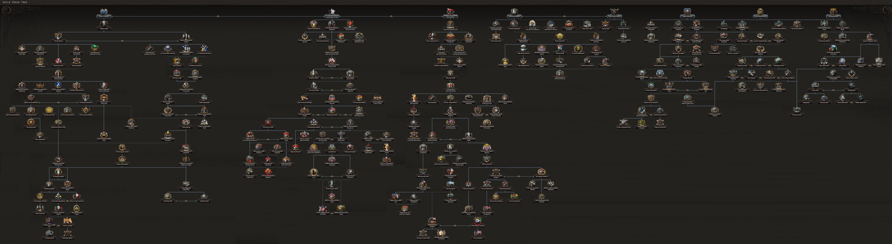
 智利 gets a unique national focus tree as part of the
智利 gets a unique national focus tree as part of the  效忠审判 expansion. Without the expansion, Chile utilizes the 通用国策树.
效忠审判 expansion. Without the expansion, Chile utilizes the 通用国策树.
The Chilean national focus tree can be divided into 4 branches, 12 sub-branches and 1 shared branch section:
With the  效忠审判 DLC enabled, Chile also starts with the following national spirits:
效忠审判 DLC enabled, Chile also starts with the following national spirits:
 智利 begins with 2 research slots available; 2 more can be unlocked through the national focus tree.
智利 begins with 2 research slots available; 2 more can be unlocked through the national focus tree.
| 陆军科技 | 海军科技 | 空军科技 | 电子与工业 |
|---|---|---|---|
|
|
没有
|
「无」 |
| 陆军学说 | 海军学说 | 空军学说 |
|---|---|---|
|
「无」 |
「无」 |
「无」 |
| 陆军科技 | 海军科技 | 空军科技 | 电子与工业 |
|---|---|---|---|
|
|
没有
|
|
| 陆军学说 | 海军学说 | 空军学说 |
|---|---|---|
|
|
|
 智利 的装备没有任何独特外观名称。
智利 的装备没有任何独特外观名称。
 智利 owns 8 states. Chilean states are composed mostly from mountains.
智利 owns 8 states. Chilean states are composed mostly from mountains.
| 州 | 城市 | 地形（省份数） | 区域 | ||
|---|---|---|---|---|---|
| 安托法加斯塔 | 安托法加斯塔 | 10 | 发达乡村区 | 423,605 | |
| 阿劳卡尼亚 | Puerto Montt Temuco |
1 2 |
发达乡村区 | 1,300,000 | |
| 阿里卡-塔拉帕卡 | Arica Iquique |
2 1 |
乡村区 | 340,000 | |
| 阿塔卡马 | Copiapó | 2 | 发达乡村区 | 283,605 | |
| 艾森 | Coyhaique | 2 | 牧区 | 34,347 | |
| 复活节岛 | 汉加罗阿 | 1 | 小岛 | 6,600 | |
| 麦哲伦 | Punta Arenas Punta Delgada |
2 1 |
牧区 | 34,346 | |
| 圣地亚哥 | Chillán Concepción Coquimbo 圣地亚哥 Valparaíso |
1 2 3 15 5 |
密集城市区 | 2,635,146 |
 Partido Liberal
Partido Liberal
| 同上 | 政党 | 意识形态 | 支持率 | 党派领袖 | 国名 | Ruling? |
|---|---|---|---|---|---|---|
| Partido Liberal | 民主主义 | 98% | 阿图罗·亚历山德里 | 智利 | ||
| 智利共产党（PCCh） | 共产主义 | 2% | 卡洛斯·孔特雷拉斯·拉巴尔卡 | 智利社会主义共和国 | ||
| Vanguardia Popular Socialista (VPS) | 法西斯主义 | 0% | 豪尔赫·冈萨雷斯·冯·马雷斯 | 先锋智利 | ||
| Partido Ibanista | 中立主义 | 0% | 卡洛斯·伊巴涅斯·德尔坎波 | 智利共和国 |
智利 的可能国家领袖。
的可能国家领袖。
| 意识形态 | 肖像 | 名称 | 党派 | 特质 | 效果 | 可用 |
|---|---|---|---|---|---|---|
Despotism |
|
卡洛斯·伊巴涅斯·德尔坎波 | 伊瓦尼斯塔党（PI） | 总统将军 |
|
can come to power via focus 伊巴涅斯的政变 |
Despotism |
曼努埃尔·曼基莱夫 | 考波利坎阿劳卡尼亚保卫协会（考波利坎协会） | Defender of Araucanía |
|
can come to power via focus | |
Despotism |
埃斯特班·罗梅罗·桑多瓦尔 | 考波利坎阿劳卡尼亚保卫协会（考波利坎协会） | 1881 年的遗产 |
|
can come to power via focus | |
Despotism |
贝南西奥·科纽埃潘·韦恩丘阿尔 | 考波利坎阿劳卡尼亚保卫协会（考波利坎协会） | 现代阿巴希诺·隆科 |
|
can come to power via focus | |
Despotism |
安托万三世 | 奥雷利-安托万一世家族，阿劳卡尼亚与巴塔哥尼亚的开创者国王（奥雷利家族） | Roi d'Araucanie et de Patagonie |
|
can come to power via focus | |
| Roi d'Araucanie et de Patagonie |
| |||||
| Roi d'Araucanie et de Patagonie |
| |||||
自由主义 |
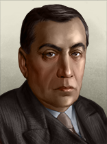 |
阿图罗·亚历山德里 | 自由党（PL） | León de Tarapacá |
|
起始领袖 |
社会主义 |
佩德罗·阿吉雷·塞尔达 | 人民阵线（FP） | 治理即教育 |
|
可通过事件The Winds of Change上台 | |
社会主义 |
埃利亚斯·拉费尔特·加维诺 | 社会民主党 | The Workers' President | can come to power via event The Winds of Change or via event The 1942 Presidential Election | ||
保守主义 |
|
卡洛斯·伊巴涅斯·德尔坎波 | 人民自由联盟（APL） / 伊瓦尼斯塔党（PI） | 总统将军 |
|
can come to power via event The Winds of Change or via focus 伊巴涅斯的政变 |
社会主义 |
胡安·安东尼奥·里奥斯 | 民主联盟（AD） | Spearhead of the Alianza Democrática de Chile | 可通过事件The 1942 Presidential Election上台 | ||
保守主义 |
爱德华多·克鲁斯-科克 | 保守党（PC） | 医疗卫生之友 | can come to power via event The 1942 Presidential Election or via event The 1946 Presidential Election | ||
自由主义 |
费尔南多·亚历山德里 | 自由党（PL） | 受欢迎的律师 |
|
可通过事件The 1946 Presidential Election上台 | |
社会主义 |
|
马马杜克·格罗韦·巴列霍 | 社会党（PS） | 复活节岛社会主义者 | 可通过事件The 1942 Presidential Election上台 | |
保守主义 |
加夫列尔·冈萨雷斯·魏地拉 | 激进党（PR） | Anti-Communist | 可通过事件The 1946 Presidential Election上台 | ||
马克思主义 |
埃利亚斯·拉费尔特·加维诺 | 智利共产党（PCCh） | The Workers' President | can come to power via Communist referendum | ||
马克思主义 |
|
马马杜克·格罗韦·巴列霍 | 智利社会党（PS） | 复活节岛社会主义者 | can come to power via referendum or via event The Santiago Conference | |
斯大林主义 |
卡洛斯·孔特雷拉斯·拉巴尔卡 | 智利共产党（PCCh） | 坚定的斯大林主义者 |
|
can come to power via referendum or via event The Santiago Conference | |
反修正主义 |
曼努埃尔·伊达尔戈·普拉萨 | 共产主义左翼－革命工人党（共产主义左翼） | 虔诚的托洛茨基主义者 |
|
can come to power via referendum or via event The Santiago Conference | |
纳粹主义 |
|
豪尔赫·冈萨雷斯·冯·马雷斯 | 国家社会主义运动（MNS） | 首领 |
|
can come to power via focus via focus |
纳粹主义 |
|
卡洛斯·伊巴涅斯·德尔坎波 | 国家社会主义运动（MNS） | 总统将军 |
|
可通过事件Leadership Disputes Plagues the Party上台 |
纳粹主义 |
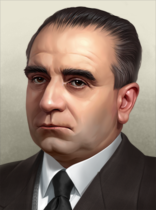 |
胡安·戈麦斯·米利亚斯 | 国家社会主义运动（MNS） | 可通过事件Leadership Disputes Plagues the Party上台 |
The independence of  智利 is guaranteed by the
智利 is guaranteed by the  美国 via 门罗主义, and this gives
美国 via 门罗主义, and this gives  智利 a (+35) opinion towards the
智利 a (+35) opinion towards the  美国.
美国.
As a  民主主义 country,
民主主义 country,  智利 has slightly positive relations with the same ideology (+10), and more stronger positive relations with countries that share the same ruling party (+20).
智利 has slightly positive relations with the same ideology (+10), and more stronger positive relations with countries that share the same ruling party (+20).  智利 has a slightly negative relationship with all
智利 has a slightly negative relationship with all  共产主义,
共产主义,  法西斯主义, and
法西斯主义, and  中立主义 countries (-10).
中立主义 countries (-10).
智利 的部长与军事幕僚。
的部长与军事幕僚。
| 名称 | 特质 | 效果 | 花费（） |
|---|---|---|---|
| 豪尔赫·冈萨雷斯·冯·马雷斯 |
首领 | 150 | |
| 卡洛斯·孔特雷拉斯·拉巴尔卡 |
Communist Intellectual | 150 | |
| 佩德罗·阿吉雷·塞尔达 |
Father of Industrialization |
|
150 |
| Luis Álamos Barros |
Minister of Trade and Development |
|
150 |
| Luis Álamos Barros |
意识形态斗士 |
|
150 |
| Miguel Cruchaga Tocornal |
President of the Senate | 150 | |
| Miguel Cruchaga Tocornal |
军工实业家 | 150 | |
| Gustavo Ross Santa María |
财政大臣 |
|
150 |
| Gustavo Ross Santa María |
军备组织者 | 150 | |
| Elías Lafertte Gaviño |
The Miners' Representative | 150 | |
| 卡洛斯·伊巴涅斯·德尔坎波 |
Ibañismo |
|
150 |
| Carlos Keller Rueff |
Pan-Hispanic Theorist |
|
150 |
| Juan Gómez Millas |
Harsh Propagandist | 150 | |
| 曼努埃尔·伊达尔戈·普拉萨 |
Minister of Public Works | 150 | |
| Gabriel González Videla |
Anti-Communist Crusader |
|
150 |
| 爱德华多·克鲁斯-科克 |
Minister of Public Health |
|
150 |
| 曼努埃尔·曼基莱夫 |
Defender of Araucanían Sovereignty |
|
150 |
| 埃斯特班·罗梅罗·桑多瓦尔 |
Mapuche Economist |
|
150 |
| 吉列尔莫·巴里奥斯·蒂拉多 |
Minister of Defense | 150 | |
| Francisco Javier Díaz Valderrama |
Defender of the Race |
|
150 |
| Ricardo Fonseca Aguayo |
Militant Communist |
|
150 |
| Humberto Arriagada Valdivieso |
神秘绅士 |
|
150 |
| Ulk |
Face Licker | 25 | |
| Elena Caffarena |
Women's Rights Activist | 150 | |
| Pablo Neruda |
社会主义作家 | 150 | |
| Jaime Alfonso Quintana |
Agricultural Capitalist |
|
150 |
| María de la Cruz |
Radical Suffragette | 150 | |
| Marta Vergara |
Feminist Editor | 150 | |
| Salvador Allende |
Reformist Minister of Health | 150 | |
| Rayén Quitral |
Famous Soprano |
|
150 |
| Jorge Alessandri |
Conservative Businessman | 150 | |
| Guido Benedikt Beck |
Apostolic Prefect of Araucania |
|
150 |
| Gabriela Mistral |
Popular Latinian Poet |
|
150 |
| Juan Bautista Rossetti |
社会主义经济学家 | 150 | |
| Emilio Bello Codesido |
Minister of Defense |
|
150 |
| Ernesto Barros Jarpa |
外交大臣 |
|
150 |
| Francisco Antonio Encina |
Agricultural National Socialist | 150 | |
| José Santos Salas Morales |
Minister of Social Assistance | 150 | |
| Ramón Subercaseaux Pérez |
President of the Central Bank |
|
150 |
| Manuel Aburto Panguilef |
Mapuche Traditionalist |
|
150 |
| Óscar Schnake |
Anarcho-Socialist | 150 | |
| Bernardo Leighton |
The National Falange | 150 | |
| Tancredo Pinochet |
University Fascist |
|
150 |
| Emilio Zapata Diaz |
National Housing Front Champion |
|
150 |
| Radomiro Tomic Romero |
Influential Christian Democrat | 150 | |
| Roberto Wachholtz Araya |
Transport Minister | 150 | |
| Arturo Olavarría |
Chilean Anticommunist Action | 150 | |
| Rolando Merino Reyes |
Minister of Lands and Colonization | 150 | |
| Jerónimo Méndez |
Minister of the Interior |
|
150 |
| Jerónimo Méndez |
Minister of the Interior |
|
150 |
| Miguel Serrano Fernández |
National Socialist Occultist | 150 | |
| Manuel Antonio Neculmán |
教育改革者 |
|
150 |
| Benjamín Matte Larraín |
Minister of Agriculture | 150 | |
| Pedro Enrique Alfonso |
Minister of Economy and Commerce |
|
150 |
| Guillermo Paulino Izquierdo Araya |
Agrarian Nationalist |
|
150 |
| Osvaldo Lira Pérez |
Fascist Theologian | 150 | |
| Carlos Huayquiñir |
Mapuche Journalist |
|
150 |
| 名称 | 特质 | 效果 | 花费（） |
|---|---|---|---|
| 何塞·路易斯·桑切斯·贝萨 |
俯冲轰炸机 |
|
100 |
| Carlos Fuentes Rabe |
军事理论家 |
|
100 |
| Dario Cellejas Rojas |
海军理论家 |
|
100 |
| 阿里奥斯托·埃雷拉 |
军事理论家 |
|
100 |
| 阿里奥斯托·埃雷拉 |
空战理论家 |
|
100 |
| 吉列尔莫·巴里奥斯·蒂拉多 |
大战略专家 |
|
100 |
| 维森特·梅里诺·别利奇 |
海军理论家 |
|
100 |
| 阿图罗·梅里诺·贝尼特斯 |
空战理论家 |
|
100 |
| 名称 | 特质 | 效果 | 花费（） |
|---|---|---|---|
| Julio Allard Pinto | 陆军机动（专家） |
|
100 |
| Óscar Novoa Fuentes | 陆军防御（专家） |
|
100 |
| 贝南西奥·科纽埃潘·韦恩丘阿尔 |
陆军进攻（专家） |
|
100 |
| Bartolomé Blanche |
老卫队 |
|
100 |
| Francisco Javier Díaz Valderrama |
Army Organization (Specialist) |
|
100 |
| Ricardo Fonseca Aguayo |
陆军进攻（专家） |
|
100 |
| Arnaldo Carrasco |
陆军操练（专家） |
|
100 |
| 名称 | 特质 | 效果 | 花费（） |
|---|---|---|---|
| C.J. de la Motte |
海军机动（专家） |
|
100 |
| Francisco O'Ryan Orrego |
决战（专家） |
|
100 |
| 维森特·梅里诺·别利奇 |
海军改革者（专家） | 100 |
| 名称 | 特质 | 效果 | 花费（） |
|---|---|---|---|
| 马马杜克·格罗韦·巴列霍 | 老卫队 |
|
50 |
| Dario Mujica Gamboa |
地面支援（专家） |
|
100 |
| Diego Aracena Aguilar |
空军改革者（专家） | 100 | |
| 阿图罗·梅里诺·贝尼特斯 |
夜间作战（专家） |
|
100 |
| 名称 | 特质 | 效果 | 花费（） |
|---|---|---|---|
| Oscar Escudero Otárola |
火炮（专家） |
|
100 |
| Julio Allard Pinto |
Naval Air Defense (Specialist) |
|
100 |
| Gustavo Silva |
海军防空（专家） |
|
100 |
| 何塞·路易斯·桑切斯·贝萨 |
战略轰炸（专家） |
|
100 |
| Óscar Novoa Fuentes |
Army Regrouping (Genius) |
|
200 |
| Carlos Fuentes Rabe |
骑兵（专家） |
|
100 |
| Arturo Espinoza Mujica |
工事（专家） |
|
100 |
| Arturo Espinoza Mujica |
火炮（专家） |
|
100 |
| Carlos Puga Monsalve |
海军打击（专家） |
|
100 |
| Ernesto M. Orlando |
步兵（专家） |
|
100 |
| Gregorio Rodríguez Tascón |
陆军后勤（专家） |
|
100 |
| Rafael Fernández Reyes |
Commando (Specialist) |
|
100 |
| Olegario Reyes Del Río |
Capital Ships (Specialist) |
|
100 |
| Emilio Daroch Soto |
潜艇（专家） |
|
100 |
| Jorge Videla Cobo |
屏卫舰（专家） |
|
100 |
| 阿图罗·梅里诺·贝尼特斯 |
Air Combat Training (Genius) |
|
100 |
| 肖像 | 名称 | 特质 | 要求 | |||||
|---|---|---|---|---|---|---|---|---|
| 豪尔赫·冈萨雷斯·冯·马雷斯 | 2 | 3 | 1 | 1 | 2 |
| ||
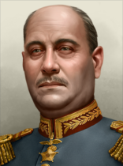 |
Óscar Novoa Fuentes | 3 | 2 | 3 | 2 | 3 |
|
| 肖像 | 名称 | 特质 | 要求 | |||||
|---|---|---|---|---|---|---|---|---|
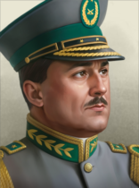 |
Augustin Moreno Ladron de Guevara | 1 | 1 | 1 | 1 | 1 |
| |
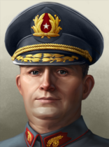 |
Alfredo Portales Mourgues | 2 | 2 | 1 | 1 | 2 |
| |
| 阿里奥斯托·埃雷拉 | 1 | 1 | 1 | 1 | 1 |
| ||
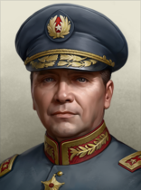 |
Arturo Espinoza Mujica | 1 | 1 | 1 | 1 | 1 |
| |
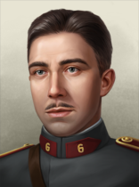 |
Augusto Pinochet | 1 | 2 | 1 | 1 | 1 |
| |
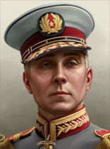 |
Bartolomé Blanche | 3 | 2 | 2 | 3 | 3 | ||
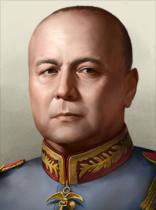 |
Carlos Fuentas Rabe | 2 | 2 | 1 | 1 | 2 | ||
| 卡洛斯·伊巴涅斯·德尔坎波 | 3 | 3 | 2 | 2 | 3 |
| ||
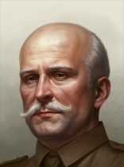 |
Carlos Keller Rueff | 2 | 2 | 1 | 2 | 1 |
| |
| Carlos Prats | 1 | 1 | 1 | 1 | 1 |
| ||
| Estoban Romero Sandoval | 4 | 4 | 4 | 2 | 3 |
| ||
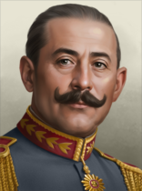 |
Francisco Javier Díaz Valderrama | 1 | 2 | 1 | 2 | 1 |
| |
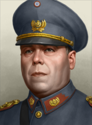 |
Gregario Rodríguez Tascón | 2 | 2 | 1 | 3 | 1 |
| |
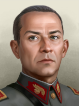 |
吉列尔莫·巴里奥斯·蒂拉多 | 2 | 2 | 1 | 1 | 2 |
| |
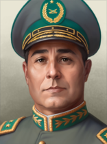 |
Humberto Arriagada Valdivieso | 2 | 1 | 2 | 2 | 1 |
| |
| 曼努埃尔·曼基莱夫 | 1 | 1 | 1 | 1 | 1 |
| ||
| Manuel Quintín Lame Chantre | 4 | 3 | 2 | 4 | 4 |
| ||
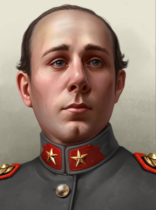 |
Manuel Santiago Concha Pedregal | 2 | 1 | 3 | 2 | 2 | ||
| 马马杜克·格罗韦·巴列霍 | 3 | 2 | 3 | 2 | 3 |
| ||
| Oscar Escudero Otárola | 4 | 4 | 2 | 4 | 3 | |||
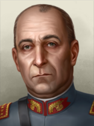 |
Oscar Escudero Otárola | 2 | 2 | 3 | 2 | 2 | ||
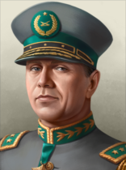 |
Oscar Reeves Leiva | 1 | 1 | 1 | 1 | 1 | ||
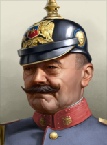 |
Pedro Dartnell | 3 | 4 | 2 | 2 | 1 | ||
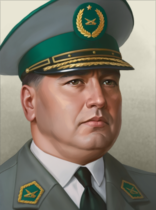 |
Pedro Silva Calderón | 1 | 1 | 1 | 1 | 1 |
| |
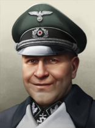 |
Peter Adolf Caesar Hansen | 4 | 5 | 1 | 2 | 4 |
| |
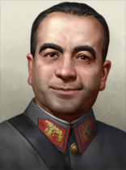 |
Rafael Fernández Reyes | 2 | 1 | 2 | 2 | 1 |
| |
| Ricardo Fonesca Aguayo | 2 | 2 | 2 | 1 | 1 |
| ||
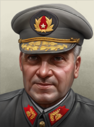 |
René Schneider | 1 | 1 | 1 | 1 | 1 |
| |
| 贝南西奥·科纽埃潘·韦恩丘阿尔 | 3 | 3 | 2 | 3 | 2 |
| ||
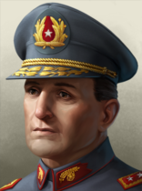 |
Óscar Fuentes Pantoja | 1 | 1 | 1 | 1 | 1 |
|
| 肖像 | 名称 | MNV |
COR |
特质 | 要求 | |||
|---|---|---|---|---|---|---|---|---|
| Emilio Daroch Soto | 2 | 2 | 1 | 2 | 1 | |||
| Jorgo Videla Cobo | 3 | 3 | 1 | 3 | 2 | |||
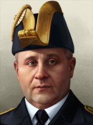 |
Julio Allard Pinto | 2 | 2 | 2 | 1 | 2 |
| |
| Olegario Reyes Del Río | 2 | 2 | 1 | 2 | 2 |
| ||
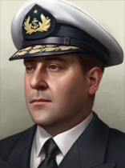 |
维森特·梅里诺·别利奇 | 3 | 2 | 3 | 2 | 2 |
Without the  效忠审判 DLC,
效忠审判 DLC,  智利 uses generic concerns, designers and organizations.
智利 uses generic concerns, designers and organizations.
| 标志 | 名称 | 类型 | 效果 | 要求 | 花费（） |
DLC |
|---|---|---|---|---|---|---|

|
Compañia General de Electricidad | 电子学财团 |
|
|
150 | |

|
Compañía Sudamericana de Vapores | Merchant Marine Manufacturer |
|
|
150 | |

|
Vía Trans Radio Chilena Compañía de Radiotelegrafía | Electronics Developer |
|
|
150 | |

|
Banco Central de Chile | 中央银行 |
Completing focus
|
|
150 | |

|
Compañía Electro-Siderúrgica e Industrial de Valdivia | 工业财团 |
|
|
150 | |

|
Empresa de los Ferrocarriles del Estado | 铁路公司 |
|
150 | ||

|
Compañía Manufacturera de Papeles y Cartones | Forestry Company |
|
|
150 | |

|
Corporación de Fomento de la Producción de Chile | 建筑公司 |
|
|
50 |
智利 的设计公司。
的设计公司。
| 标志 | 名称 | 类型 | 效果 | 要求 | 花费（） |
DLC |
|---|---|---|---|---|---|---|

|
陆军坦克部 | 机动坦克设计商 |
选择此设计公司后，只要它仍在受雇，就会永久影响其受雇期间研究的所有装备的性能。 |
|
150 |
| 标志 | 名称 | 类型 | 效果 | 要求 | 花费（） |
DLC |
|---|---|---|---|---|---|---|
| 海军兵工厂 | 近海防御舰队设计商 |
选择此设计公司后，只要它仍在受雇，就会永久影响其受雇期间研究的所有装备的性能。 |
|
150 | ||
|
|
CSAV | 护航舰队设计商 |
选择此设计公司后，只要它仍在受雇，就会永久影响其受雇期间研究的所有装备的性能。 |
|
150 |
| 标志 | 名称 | 类型 | 效果 | 要求 | 花费（） |
DLC |
|---|---|---|---|---|---|---|
| FANAERO | 中型飞机设计商 |
选择此设计公司后，只要它仍在受雇，就会永久影响其受雇期间研究的所有装备的性能。 |
|
150 | ||

|
ENAER | 轻型飞机设计商 |
选择此设计公司后，只要它仍在受雇，就会永久影响其受雇期间研究的所有装备的性能。 |
|
150 |
| 标志 | 名称 | 类型 | 效果 | 要求 | 花费（） |
DLC |
|---|---|---|---|---|---|---|
| Fábricas y Maestranzas del Ejército | 步兵装备设计商 |
|
|
150 | ||
| Willys FAMAE Corvo | 摩托化装备设计商 |
|
|
150 | ||
| FAMAE - Rama de Artillería | 火炮设计商 |
|
|
150 |
 智利 可使用这些军工产业组织。
智利 可使用这些军工产业组织。
| ||||||||||||||||||||||||||||||||||||||||||||||||||||||||||||||||||||||||||
| ||||||||||||||||||||||||||||||||||||||||||||||||||||||||||||||||||
| ||||||||||||||||||||||||||||||||||||||||||||||||||||||||||||||||||||||||||||||||||||||||||||||||||||||||||||||||||||||||||||||||||||||||||||||||||||||||||||||||||||||||||||||||||||||||||||||||||||||||||||||||||
| ||||||||||||||||||||||||||||||||||||||||||||||||||||||||||||||||||||||||||||||||||||||||||||||||||||||||||||||||||||||||||||||||||||||||||||||||||||||||||||||||||||||||||||||||||||||||||||||||||||||||||||||||||
| 征兵法案 | 贸易法案 | 经济法令 |
|---|---|---|
|
|
|
*1936 年与 1939 年的法案相同。
年份 |
军用工厂 |
海军船坞 |
民用工厂 |
建筑槽位 |
|---|---|---|---|---|
| 1936 | 2 | 4 | 8 (-4) | 25 |
*红色 中的数字表示生产消费品所需的民用工厂数量，依据经济法案以及军用与民用工厂总数向上取整。
年份 |
石油 |
铝 |
橡胶 |
钨 |
钢铁 |
铬 |
煤 |
|---|---|---|---|---|---|---|---|
| 1936 | 4 (-2) | 1 | 0 | 96 (-48) | 56 (-28) | 6 (-4) | 7 (-3) |
*这些数字表示游戏开始一小时后可用的资源量。红色 中的数字表示因贸易法案而留作出口的资源量。
| 类型 | # 1936 | # 1939 | |
|---|---|---|---|
| 步兵 | 3 | ||
| 骑兵 | 1 | ||
| 师总数 | 4 | 4 | |
| 已用人力 | 36.00K | 38.30K | |
| 师 | 名称列表 | # 1936 | # 1939 | 支援连 | 战斗营 |
|---|---|---|---|---|---|
| 步兵师 | 3 | 0 | 9x | ||
| 步兵师 | 0 | 3 | 9x | ||
| 骑兵师 | 1 | 0 | 9x | ||
| 骑兵师 | 0 | 1 | 9x | ||
| * 标记的是在 1939 年开局中被移除的师。 ^ 标记仅存在于 1939 年开局中的师。 | |||||
| 类型 | # 1936 | # 1939 | |
|---|---|---|---|
| 战列舰 | 1 | ||
| 重巡洋舰 | 1 | ||
| 轻巡洋舰 | 1 | ||
| 驱逐舰 | 8 | ||
| 潜艇 | 9 | ||
| 运输船队 | 50 | ||
| 舰船总数 | 20 | 20 | |
| 已用人力 | 9.80K | 9.80K | |
| 类型 | Class | Hull | 发动机 | # 1936 | # 1939 | 设计说明 | ||
|---|---|---|---|---|---|---|---|---|
| BB | Almirante Latorre | 早期重型舰船 | 重型 I | 1 | 1 | 2x Heavy Battery I, 2x Secondary Battery I, Anti-Air I, Fire Control 0, Battleship Armor I, Floatplane Catapult I | ||
| CA | O'Higgins | 岸防舰 | 巡洋舰 I | 1 | 1 | Medium Battery I, Secondary Battery I, Anti-Air I, Fire Control 0, Cruiser Armor I | ||
| CL | Chacabuco | 岸防舰 | 巡洋舰 I | 1 | 1 | Medium Battery I, Fire Control 0, Torpedo Launcher I | ||
| DD | Almirante Lynch* | 早期驱逐舰 | 轻型 I | 2 | 2 | 轻型火炮 I、火控系统 0、鱼雷发射器 I | ||
| DD | Serrano | 早期驱逐舰 | 轻型 I | 6 | 6 | Light Battery I, Fire Control 0, Torpedo Launcher I, Depth Charge I, Minelaying Rails | ||
| SS | Capitán O'Brien | 早期潜艇 | 潜艇 I | 3 | 3 | 2x 鱼雷发射管 I | ||
| SS | H1* | 早期潜艇 | 潜艇 I | 6 | 6 | 鱼雷发射管 I | ||
| * 标记表示该变体「已过时」。 舰种术语：
| ||||||||
| 类型 | |||||
|---|---|---|---|---|---|
| 战斗机 | 18 | 18 | |||
| 近距空中支援 | 0 | 20 | |||
| 战术轰炸机 | 0 | 16 | |||
| 飞机总数 | 18 | 18 | 54 | 54 | |
| 已用人力 | 360 | 360 | 1.40K | 1.40K | |
 智利 has a small air force composed of a single wing of 18 P-6 fighters. In 1939, it owns 20 Close Air support wings and 16 Tactical Bombers.
智利 has a small air force composed of a single wing of 18 P-6 fighters. In 1939, it owns 20 Close Air support wings and 16 Tactical Bombers.
 智利 finds itself in an equally precarious position as
智利 finds itself in an equally precarious position as  阿根廷和
阿根廷和 巴西. While Argentina has to worry about its internal political stability, its unstable economy, its weak industry and military, opportunistic neighbors can threaten its holdings, it does have access to a decent amount of manpower, a decent navy, has enough industrial capacity to mount a workable (if desperate) defense and can, with enough effort, execute enough reforms to stabilize its government and economy, build up its industry and military and secure its own territorial holdings and national sovereignty.
巴西. While Argentina has to worry about its internal political stability, its unstable economy, its weak industry and military, opportunistic neighbors can threaten its holdings, it does have access to a decent amount of manpower, a decent navy, has enough industrial capacity to mount a workable (if desperate) defense and can, with enough effort, execute enough reforms to stabilize its government and economy, build up its industry and military and secure its own territorial holdings and national sovereignty.
Chile on the other hand has equally pressing issues at hand; while they do have have the same political and economic stability problems to worry about as Argentina, they control quite a thin territory, manpower, industry and material and are used and after series of events and will therefore be hard-pressed to hold their own in a direct confrontation with its neighbours, Argentina or even other prominent South American nations. In addition to all that, Chile also has a rather lofty "victory" condition to aim for: somehow, if it must survive through any supposed turmoil, take over all of South America before they can consider themselves truly successful.
That being said, Chile is not completely broken, for a thin nation it can be the most dangerous and maneuvering, as the rest of their neighbours will soon learn.
Chile, unlike all prominent South American nations, can actually decide what type of South American control to adhere to: Indigenous Mapuche Empire or to adopt to Kingdom of Aracunia and Patagonia.
The Look to Tradition national focus leads to a crossroads with paths to choose from. Each one allows the player to clean up the internal mess of the government and recover from the damage suffered in the hands of the imperialists or by seeking support from other obscure figures of Chilean history.
The Rule by Decree national focus and all focuses following it are based around the idea of adhering to the re-creation of the self proclaimed monarchy by drawing closer to the  French Monarchy and the solving of the Mapuche conflict and having to puppet the surrounding nations work together to spread the Francophone influence in the world. Electing this path will remove Carlos Ibanez from power and replace him with 安托万三世.
However if reaching the final end, the player can revert the decision while in game, by bringing back Ibanez back to power and severing the idea of a global Francophone.
French Monarchy and the solving of the Mapuche conflict and having to puppet the surrounding nations work together to spread the Francophone influence in the world. Electing this path will remove Carlos Ibanez from power and replace him with 安托万三世.
However if reaching the final end, the player can revert the decision while in game, by bringing back Ibanez back to power and severing the idea of a global Francophone.
The Address the Mapuche Conflict national focus and all focuses following it are based around the idea of creating an uniquely Chilean nation and having to oust Ibanez from power and take matters into their own hands and conquer its neighbours through using its own abilities and resources. Electing Manquilef, Sandoval or Huenchual depends on the players choice, however  Mapuche will not be able to join an alliance unless via national focus. Instead, it will form its own faction which can be used to invite other nations into, like
Mapuche will not be able to join an alliance unless via national focus. Instead, it will form its own faction which can be used to invite other nations into, like  巴西 or any other southern American nation that decides to draw closer to the faction. Before that, it will have to face a during civil war that the new Mapuche state has to remerge victorious, albeit losing some manpower, advisors and goods in the process. But in the restoration of an indigenous American country.
This is the hardest path as Chile will (in essence) be taking on Brazil and Canada, Mexico and the United States on its own. Chile will have to take maximum advantage of everything they have available for use utilizing spy agencies that can provide operations like infiltrating administrations and staging collaboration governments, among other things.
巴西 or any other southern American nation that decides to draw closer to the faction. Before that, it will have to face a during civil war that the new Mapuche state has to remerge victorious, albeit losing some manpower, advisors and goods in the process. But in the restoration of an indigenous American country.
This is the hardest path as Chile will (in essence) be taking on Brazil and Canada, Mexico and the United States on its own. Chile will have to take maximum advantage of everything they have available for use utilizing spy agencies that can provide operations like infiltrating administrations and staging collaboration governments, among other things.
The Crusade Against Imperialism national focus opens up into decisions, a list that grants more unique puppet states as  Mapuche's industrial capacity and infrastructure improves in the players command, a standing manpower and gets rid of some of its occupation rule issues. With notable exceptions, notably as Brazil, Bolivia, Mexico, Canada and United States solely gaining a country rebranding being that their strength and country utility within themselves are usable for various battles to come.
Mapuche's industrial capacity and infrastructure improves in the players command, a standing manpower and gets rid of some of its occupation rule issues. With notable exceptions, notably as Brazil, Bolivia, Mexico, Canada and United States solely gaining a country rebranding being that their strength and country utility within themselves are usable for various battles to come.
Argentina paints as the first target, by decision focus. If feeling confident and having enough troops produced for the matter, Chile should push and outmanoeuvre the Argentine troops stationed in the border. The lengthy border shared between nations, border gaps that Argentina tends to let go, pose for a potential encirclement for the Argentinian troops, thus leaving Chile to its favour to control and seize territory. In countries to follow,  Mapuche will generate less tension, and will have less than 30 days to declare war to any upcoming nation after conquering Argentina. Starting with small and/or weaker targets: Uruguay, Paraguay, Bolivia and Peru. Make sure to request their forces once you release them as indigenous puppet nations. Since they will contribute mostly on your campaigns. Do not forget to utilize every puppet nations navy
Mapuche will generate less tension, and will have less than 30 days to declare war to any upcoming nation after conquering Argentina. Starting with small and/or weaker targets: Uruguay, Paraguay, Bolivia and Peru. Make sure to request their forces once you release them as indigenous puppet nations. Since they will contribute mostly on your campaigns. Do not forget to utilize every puppet nations navy
Brazil, being a big target has to be taken down immediately. Although, posing as a big nation can illusion the idea of concealing a large army in front of the frontline. It is advised to strike first, and with the small tension, small justify day limit goal, contributes to the conquest greatly. Reach for the dense populated areas, and deal with the Amazonian lands next. Puppet them first, and via decision reorganize them. With the big issue dealt for now, Peru follows next. Peru can be a tougher nation, justified of the fascist regime, it can spawn well built units. Same strategy followed, declare war, use your puppets coalition troops and navy, pin them in the border, and try for a naval invasion on the Peruvian soil. Follow up with Ecuador, being that it is an easy target to conquer, then finally form the Incan Empire.
The tensions might have risen up at this point. Europe and the rest of the world plundered by World War,  马普切国 will find itself in a thin line next. As Communist or Democratic nations, (Non Aligned nations in occasion) will join the Allies or the Comintern, and the total war will soon mark its eyes on the South American continent. Starting with the declaration of war with Colombia. Colombia fully being a democrat state will join the Allies. Should
马普切国 will find itself in a thin line next. As Communist or Democratic nations, (Non Aligned nations in occasion) will join the Allies or the Comintern, and the total war will soon mark its eyes on the South American continent. Starting with the declaration of war with Colombia. Colombia fully being a democrat state will join the Allies. Should  马普切国 finish swiftly Venezuela, with a bit of a struggle, and sending the Allied forces away from the Guyana states it will form the Kingdom of El Dorado.
马普切国 finish swiftly Venezuela, with a bit of a struggle, and sending the Allied forces away from the Guyana states it will form the Kingdom of El Dorado.
At this point, the manpower has become limited, thanks to many occupied states that await formable decisions, and the population being unable to produce more. It is time to turn to your puppet states and use them to produce many troops as you can, just to protect any naval invasions perpetuated by Allied Forces (Notably the US) Trading resources with your puppets it isnt costly. And by one factory request, you can trade as much amount of resources needed to produce planes, motorized or support equipment in ease.
Panama, and the rest of the central American nations do not pose a threat at any rate, with an exception of El Salvador which can try to resist for a bit. The Mapuche "Empire" can easily steamroll them all the way in front of the Mexican borders. By the time Guatemala falls into Mapuche control, the Mosquito Nation, The Nahua Nation and the Isthmo-Amerindian state should have been formed, losing the concern of the occupation laws in those states. Mexico should be in the same faction with USA, either the Allies or a domestic faction, and a chance of their troops stated in the Guatemalan border is low. It will catch them by surprise, and if any troop encountered, encircle them quick, along with their allied assisted troops. Once you enter in several southern Mexican core states, and British controlled Belize, be sure to seize and form Chichen Itza state and the Mayan state, instantly. And, depending the circumstances, request their troops to assist for the North American campaign.
Most of the American troops have been dispersed, either focusing on the German or Japanese campaign, or maintaining closure on the East Coast. Rush the troops to occupy the entirety of the West Coast, albeit undefended, the more land occupied the better for the war campaign. Notably with Canada too, since they are already an Allied member nation. As followed, The Mapuche must have total control on the Western lands of North America. Afterwards, focus on rushing further East, consolidating the rest of the Canadian and US cores under the Mapuche control. The Allies have not been defeated yet, so the British Isles remain unoccupied for now. With an abundance of troops, and a large navy, it is time to plan an unopposed naval invasion. Or by miracle, should the Axis have done it first, ask them for access, and safely land your naval invading troops into Axis occupied British soil to finish the job. Finally when the Allies capitulate, be sure to take all Allied American lands, Greenland(Even with their navy if possible) and a couple of their possessions in Oceania. When done so, Mapuche can finally puppet release 8 more nations (3 by reorganization of nations, 5 as new), and core the Falkland and South Georgia islands.
Finally, by going by the national focus Unified by Will the Mapuche annexes and gains cores in all Amerindian and Polynesian subject states. In 70 in game days, the nation will be known as Grand Federation of Amerindian Peoples. With a massive amount of factories, resources, manpower that rivals China, and a large army totalling from North to South.
The Dissolve COVENSA/Public Works Projects branch should be progressed down whenever the player has the opportunity to do so as Chile starts with only two Research Slots and can only unlock more by building up its industry and infrastructure. One is tempting with giving extra bound resources, that in South America are either hard to obtain or just scarce. And the other, can provide additional infrastructure, extra building slots and better factory output.
Several focuses that allow Chile to gradually get rid of several penalties within The Chilean Economy and it also presents them in bonuses and with a choice; Should Chile go for Construct New Hydroelectric Stations和Expand the Forestry it will worsen the relations with the Mapuche community. But giving them the rights done in the decision section will permanently lock them. Going with the focus Impose New Taxes it will continue for 360 days it will adjust the amount of factories allocated to Consumer Goods by 5% but will also apply a penalty which causes a -10% penalty. But at the same time it will give bonus to the Chilean economy spirit by Consumer Goods Factories factor by -10% and a 5% construction speed. Before going for the research slot, it will have to do the Devalue the Pesos/Franc focus, which will delay the rush for one year, but give Consumer Goods Factories factor: -15.0% for the one year in game.
Because Chile lacks a diverse amount of resources and manpower it can be quite challenging to build up and maintain a respectable military to contend with the other neighbouring nations. However, the steel resource abundance makes it up for massive gun producing to a maximum extend. As such, when it comes to military build-up, Chile should strive to collect all the low-hanging fruit that is within its reach to secure every advantage it can. In other words, try to focus on maximizing the utility of all options that you have access to resource-, factory- and manpower-wise.
In the early stages of the campaign, the Chilean player should first prioritize making sure that all of their units (Chile starts with 4 Infantry divisions) are almost equipped. It does not matter if the the equipment they are using is outdated, just make sure that every man has a rifle and ammunition at hand. It comes up with various paramilitary units, cavalry, and a mix of Infantry Cavalry units.
Once the equipment issues are taken care of, the player can begin expanding their military; 步兵 is cheap and easy to produce but it pays greatly to also introduce specialized units to augment the army's fighting capability.
步兵 is cheap and easy to produce but it pays greatly to also introduce specialized units to augment the army's fighting capability.  骑兵 units can be of notable use as they are 1.8 times as fast as regular infantry at the cost of only being slightly more expensive in terms of supply use and equipment, which can make them useful as cheap rapid-response units to intercept and delay enemy units while other units make their way over to assist in the defense.
骑兵 units can be of notable use as they are 1.8 times as fast as regular infantry at the cost of only being slightly more expensive in terms of supply use and equipment, which can make them useful as cheap rapid-response units to intercept and delay enemy units while other units make their way over to assist in the defense.
 火炮 can be quite a potent addition to Chile's arsenal as, aside from
火炮 can be quite a potent addition to Chile's arsenal as, aside from  阿根廷 and, to some extent,
阿根廷 and, to some extent,  巴西, most other South American nations employ usually only Infantry along with some occasional Cavalry units so artillery can allow Chile to score some decisive early victories against other nations. Beware that artillery is rather expensive to produce in the early game given your lack of other resources so it is best to first use support artillery (as it requires fewer guns, albeit at the cost of power) and only upgrade to line artillery (which is more powerful but requires more guns) once the player has secured the means to produce artillery reliably. Make sure to produce convoys as in the early game they can be handy.
巴西, most other South American nations employ usually only Infantry along with some occasional Cavalry units so artillery can allow Chile to score some decisive early victories against other nations. Beware that artillery is rather expensive to produce in the early game given your lack of other resources so it is best to first use support artillery (as it requires fewer guns, albeit at the cost of power) and only upgrade to line artillery (which is more powerful but requires more guns) once the player has secured the means to produce artillery reliably. Make sure to produce convoys as in the early game they can be handy.
In addition to the base artillery, once sufficient industry and resources have been acquired, Chile can further improve on its fighting capabilities by diversifying its arsenal and introducing  Anti-Tank Artillery和
Anti-Tank Artillery和 Anti-Air Artillery to the fray, granting them some means to effectively deal with tanks, trucks and planes, which can be a very valuable asset when facing
Anti-Air Artillery to the fray, granting them some means to effectively deal with tanks, trucks and planes, which can be a very valuable asset when facing  巴西 or
巴西 or  阿根廷, should they ever deploy such units.
阿根廷, should they ever deploy such units.
Given the limited initial manpower and industry of Chile, if facing bigger opponents like Argentina or Peru, one possible strategy is to go for a more defensive approach by employing  Fortifications和
Fortifications和 AA defenses. Take advantage of terrain features like rivers as well as any terrain that inflicts a penalty to attacking units, like mountains, hills etc., to maximize the effect of your fortifications. A strong and properly built defensive line (especially if built in layers of multiple successive fort lines) can allow the player to more easily hold off attacks by stronger opponents and inflict casualties to drain their manpower and equipment. When the enemy army is suffering from attrition and exhaustion launch a decisive counterattack to cut off the enemy's supply lines and maybe even encircle and destroy some of their units. One example includes building a defensive line through mountainous terrains and using it to hold off Peru to buy time, allowing Chile to build
AA defenses. Take advantage of terrain features like rivers as well as any terrain that inflicts a penalty to attacking units, like mountains, hills etc., to maximize the effect of your fortifications. A strong and properly built defensive line (especially if built in layers of multiple successive fort lines) can allow the player to more easily hold off attacks by stronger opponents and inflict casualties to drain their manpower and equipment. When the enemy army is suffering from attrition and exhaustion launch a decisive counterattack to cut off the enemy's supply lines and maybe even encircle and destroy some of their units. One example includes building a defensive line through mountainous terrains and using it to hold off Peru to buy time, allowing Chile to build  Synthetic Oil and Rubber Refineries, allowing it to then deploy
Synthetic Oil and Rubber Refineries, allowing it to then deploy  摩托化步兵,
摩托化步兵,  机械化 or even Tank units to launch a counterattack and score a breakthrough.
机械化 or even Tank units to launch a counterattack and score a breakthrough.
When it comes to having an airforce, once again the lack of resources effectively prevents any sort of effective airplane production until Chile can secure enough resources and factories to allow it. Focus wise it can generate air experience to make better plane designs. Once those resources and factories have been acquired, one could start by producing Interwar Fighters and Interwar Bombers to create at least a basic airforce to work with. Chile will not be able to out-produce many of its opponents until later in the game, but having the means to acquire air superiority and bomb enemy units and buildings can go a long way in helping win the war. Be advised, though, that creating an airforce is a secondary priority; do not attempt it until you have the means to do it. Make sure that you are able to maintain a functional land army first.

美国去殖民化！（America Decolonized!） 作为马普切智利，解放北美和南美的所有原住民 |

智利帝国（Chilean Empire） 控制南美洲、北美洲和亚洲所有濒临太平洋的大陆州 |

全世界的西班牙裔，联合起来！ 作为智利，组建西班牙裔联盟并让至少 8 个“西班牙裔”国家加入你的阵营 |

哪门子国王？（King of What?） 让雅克·安托万·贝尔纳成为智利国王并控制巴黎 |

主动防御 作为任一共产主义南美或中美洲国家，占领华盛顿特区。 |

Reconquistadors 作为阿根廷或智利，在持有西班牙全部核心领土时激活征服者国家精神 |

红热智利辣椒 作为共产主义智利，控制加利福尼亚 |

丛林激斗 作为任一南美国家，拥有亚马逊地区的全部州。 |

真正的秃鹰军团 作为 CHL、BOL、PRU、ECU、VEN、COL——向德国派遣志愿军 |

URSAL 成为共产主义国家并拥有整个南美洲 |
| 北美洲 |
| 南美洲 |
| 大洋洲 |
| Americas |
|
| 大洋洲 |
|
 陆军坦克部
陆军坦克部 ENAER
ENAER